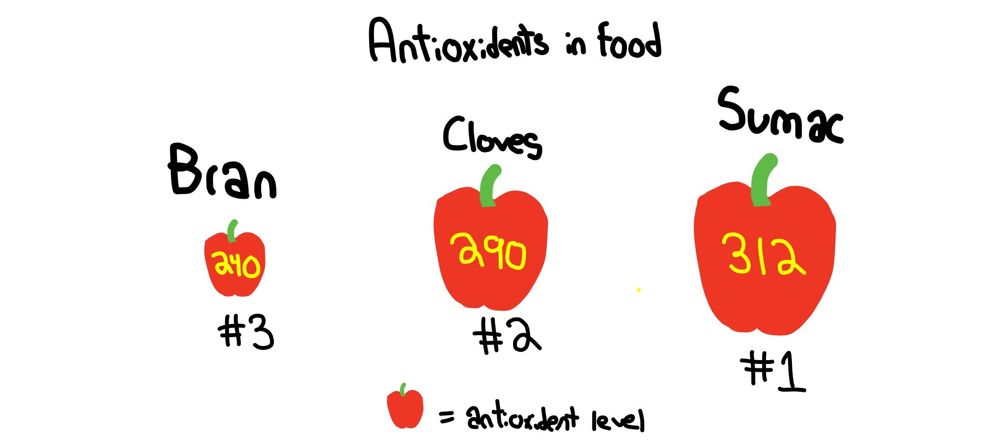

For our project we wanted to know which food held the highest value in antioxidant. So, we did some research on Tuvalabs and found a lab that showed a graph of the highest value antioxidants. We chose a line graph because it was easy to represent the data and we could clearly see the ones that held higher value than others. We found out that Sumac actually held the highest value of antioxidant, with a level of 312. Some may think that spices have more value, which they do have a lot of value, but not as much, although being ranked #2 out of all of the food labeled. Antioxidants are a good thing that we all need, and can be found abundantly in food, not just pills or remedys. Who knew eating could be yummy and good for preventing cancer and other bad things!
